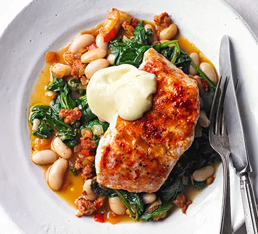

Recipe of the Month

Ingredients
- mild olive oil
- ½ x 200g pack raw cooking chorizo (we used Unearthed Alfresco Smoked)
- 1 onion, finely chopped
- 260g bag spinach
- 2 x 140g skinless hake fillets
- ½ tsp sweet smoked paprika
- 1 red chilli, deseeded and shredded
- 400g can cannellini beans, drained
- juice ½ lemon
- 1 tbsp extra virgin olive oil
Method
Step 1
Boil a full kettle of water and heat the grill to high. Heat 1 tsp oil in a large frying pan. Squeeze the meat from the chorizo directly into the pan. Add the onion and fry for 5 mins, crushing the meat with a spatula until broken up, golden and surrounded
by its juices. The onion will also be soft and golden.
Step 2
Meanwhile, put the spinach in a colander, slowly pour over the boiled water to wilt it, then run under the cold tap. Squeeze out the excess water using your hands, then set aside. Line a baking tray with foil, rub with a little oil and place the fish
on top. Season, sprinkle over the smoked paprika and drizzle with a little more oil.
Step 3
Tip the chilli into the pan with the sausages, fry for 1 min more, then add the beans, spinach, lemon juice and extra virgin olive oil. Let it warm through gently, then season to taste.